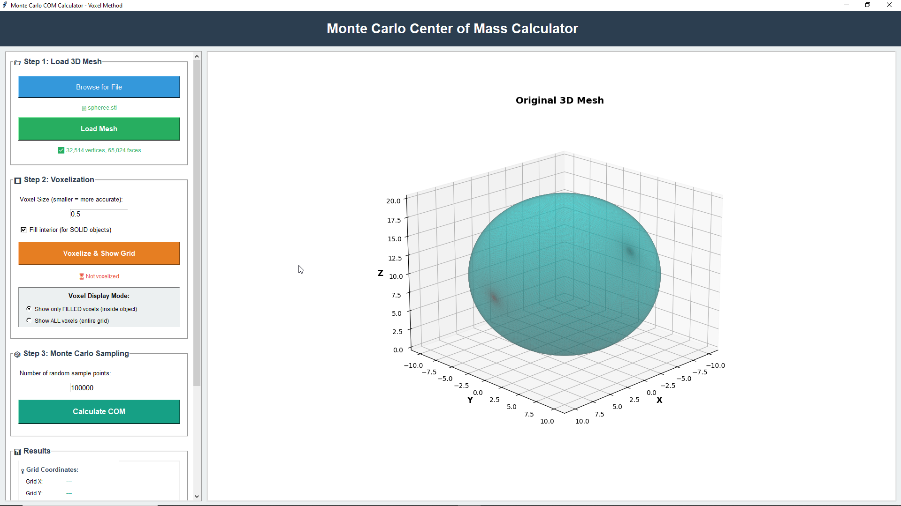
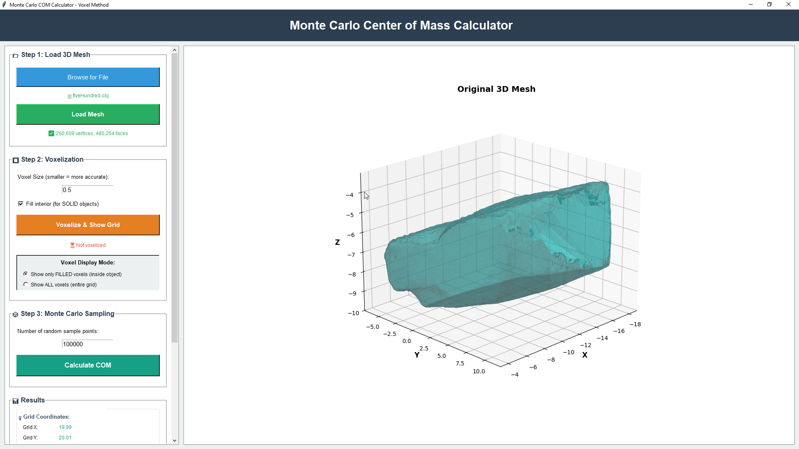
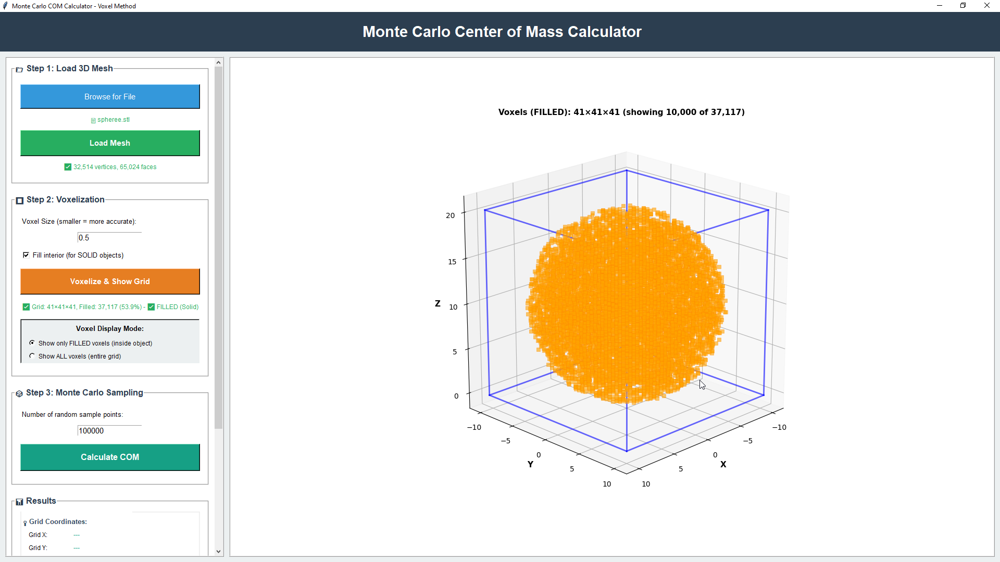
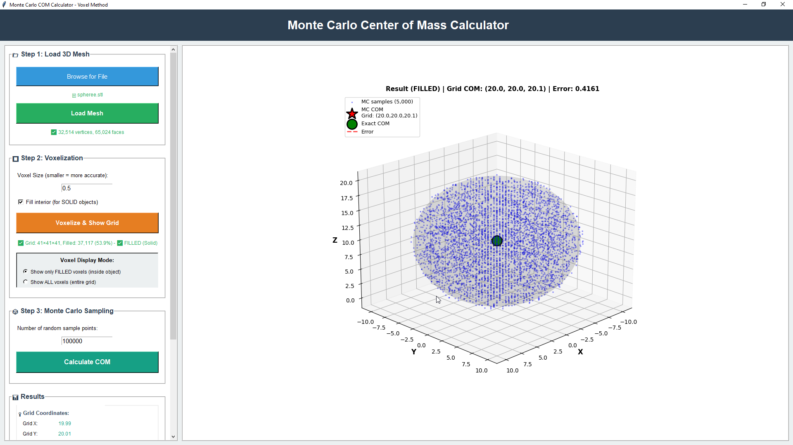
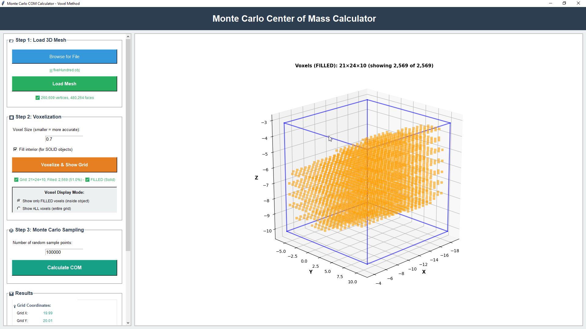
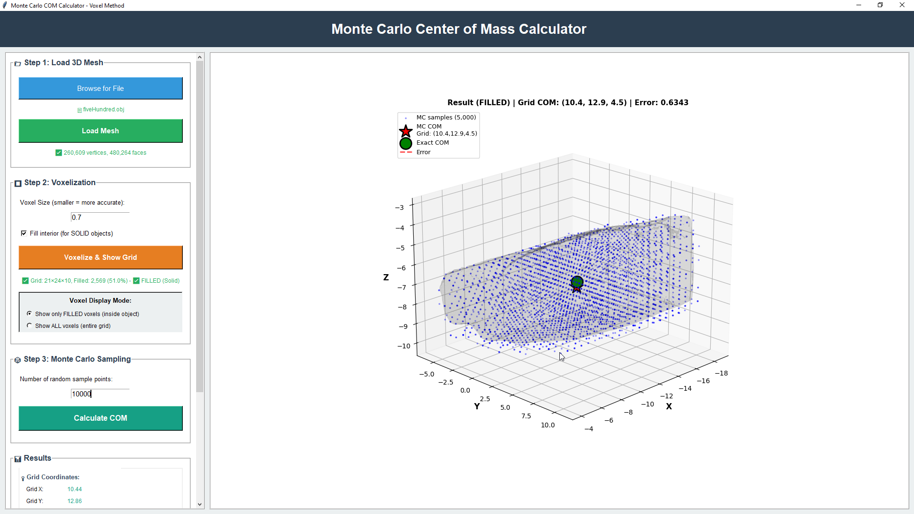

A group project (3 members) from the Random Number Theory course - estimating the Center of Mass of 3D shapes using Monte Carlo Methods with a custom Multiple Recursive Generator (MRG), Ray Casting, and Voxelization. Built with interactive Tkinter visualizations.
The point where all the mass of an object is concentrated - the balance point.
The Center of Mass is the average position of all mass points inside a 3D object, expressed as a coordinate triplet:
COM = ( x_bar, y_bar, z_bar )
The exact analytical formula uses triple integrals over the volume of the object:
x_bar = ∫∫∫ x dV / ∫∫∫ dV
y_bar = ∫∫∫ y dV / ∫∫∫ dV
z_bar = ∫∫∫ z dV / ∫∫∫ dV
For irregular or complex 3D shapes, these integrals are extremely difficult or impossible to solve analytically. That is where Monte Carlo comes in.
Instead of solving complex integrals, generate thousands of random points inside the shape and average their coordinates. More points = more accurate result.
Generate N random points inside the 3D bounding box of the object using a Multiple Recursive Generator (MRG) - a custom pseudo-random number generator that produces high-quality uniform sequences in [0, 1], then maps them to the bounding box range.
For each random point, determine whether it falls inside or outside the 3D shape. This is the key challenge - the method used depends on whether we have a mathematical equation for the shape or not.
Use the shape's equation directly. If the point satisfies the equation → it is INSIDE.
No equation exists (e.g. a stone). Use Ray Casting or Voxelization to test inside/outside.
Collect all points that are confirmed to be inside the object. Calculate the average of their x, y, and z coordinates separately. This average position is the estimated Center of Mass.
COM_x = (1/N) × Σ xᵢ | COM_y = (1/N) × Σ yᵢ | COM_z = (1/N) × Σ zᵢ
When the 3D shape is defined by a mathematical equation, we use the equation directly to test each random point.
x² + y² + z² ≤ 25Generate 3×10³ random points using MRG. Map output [0,1] to bounding box range.
x ∈ [−5, 5], y ∈ [−5, 5], z ∈ [−5, 5] - a cube that completely encloses the sphere.
If x² + y² + z² ≤ 25 → the point is INSIDE the sphere. Otherwise discard it.
Average the x, y, z coordinates of all inside points. This gives the estimated Center of Mass.
Error: 0.1014
When we increased the sample points by ×10 (from 3,000 to 30,000), the error dropped from 0.1014 to 0.0330 - demonstrating the core Monte Carlo principle: more random samples → narrower error → more accurate result.
What if we have an irregular 3D object like a stone, an airplane, or a character model - and there is no mathematical formula?
Completely irregular surface - no equation exists
Complex geometry with wings, fuselage, and engines
Organic humanoid shape - impossible to express analytically
Import the 3D object file (.obj or .stl) and extract the bounding box - the minimum and maximum coordinates along each axis.
Generate N random points in the bounding box using the Multiple Recursive Generator (MRG).
From each random point, shoot a ray in a fixed direction (e.g. the +Z axis). Count how many times the ray intersects (hits) the mesh surface triangles.
Apply the classic parity rule:
Ray Casting is highly accurate - but every single ray must traverse and check every triangle in the mesh. This makes the time complexity very high. Even with just 1,000 points, the computation time was unacceptably slow for a Monte Carlo simulation that needs hundreds of thousands of samples.
Pre compute a 3D grid of the shape once, then use O(1) lookups for every random sample point.
Import the 3D object file (.obj or .stl) and extract the bounding box. Generate the random sample points using MRG at the same time.


Divide the entire bounding box into a 3D grid of small cubes called voxels. Each voxel is marked as either:
Smaller voxel size = finer grid = more accurate boundary representation, but more memory usage.
Coarse grid - fewer voxels, less detail, faster pre compute
Fine grid - more voxels, higher accuracy, more memory
Convert the random numbers from [0, 1] range into grid index coordinates [0, grid_size] for each axis:
x_index = random_x × grid_widthy_index = random_y × grid_heightz_index = random_z × grid_depthGiven random values: u_x = 0.764, u_y = 0.241, u_z = 0.412
Check the pre-computed voxel grid at the mapped grid coordinate. This is a single array lookup - O(1) per point:
voxel[x, y, z] = 1 → point is INSIDE the objectvoxel[x, y, z] = 0 → point is OUTSIDE the objectThis is what makes Voxelization + Monte Carlo so fast - the expensive computation (building the grid) happens only once. Each of the N random samples just reads a single value from the array.
Average the coordinates of all points confirmed to be inside the object:
COM_x = mean(all inside x values)COM_y = mean(all inside y values)COM_z = mean(all inside z values)



We also compared Voxelization alone (without Monte Carlo) against Voxelization + Monte Carlo.
| Criterion | Voxelization Only | Voxelization + Monte Carlo |
|---|---|---|
| Time Complexity | O(n³) - must check every single voxel in the grid |
O(N) - only checks N random samples |
| Space Complexity | O(n³) - must store all filled voxel coordinates |
O(N) - only stores the samples that hit |
| Accuracy | High (10/10) | High (9/10) - improves as N increases |
Very accurate but requires a full mesh traversal for each point. Time complexity is too high - even 1,000 points was unacceptably slow. Rejected.
Accurate but must check every voxel - O(n³) complexity grows quickly and becomes memory intensive at high grid resolutions. Not optimal.
Pre-compute the grid once, then only check N random samples with O(1) lookups. Fast, accurate, and scalable. Best choice.
The method requires a watertight (fully closed) 3D mesh. Open or hollow shell meshes will produce incorrect inside/outside tests.
Assumes all mass is distributed uniformly throughout the object. Non-uniform density (e.g. hollow interior, denser core) is not accounted for.
The shape must exist as a 3D mesh file (.obj, .stl, etc.). Physical objects need to be 3D scanned or modelled first.
By combining a custom Multiple Recursive Generator with Voxelization, we achieved near exact Center of Mass estimation at O(N) complexity - proving that combining the right methods from Random Number Theory makes all the difference in computational geometry.
This was a collaborative effort by a team of 3 members as part of the Random Number Theory course at the University of Colombo, Faculty of Science.
The Monte Carlo COM Calculator is packaged as an installable desktop app. Hosted on Google Drive due to its size (~190 MB).
Interactive desktop app - choose a shape, set N, visualise the 3D scatter and estimated Center of Mass in real time.